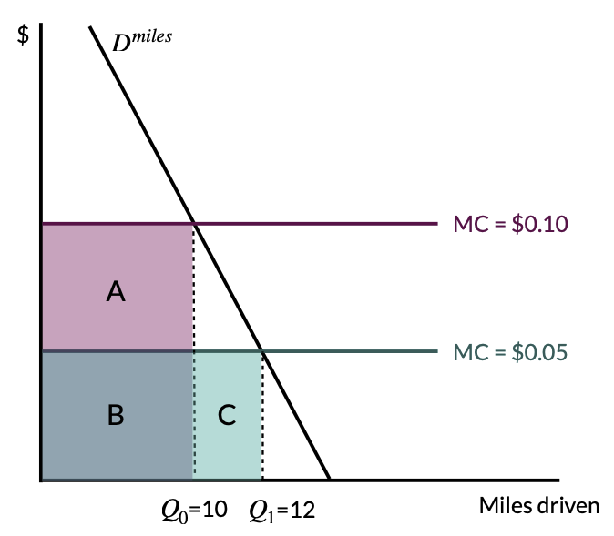

2.4 – does behavior undermine climate policy?
Note: development in progress…
does behavior undermine climate policy?
energy efficiency
Some of the cheapest ways to reduce GHG emissions are through energy efficiency improvements. Energy efficiency improvements reduce the amount of energy required to produce a unit of output. For example, switching from incandescent lightbulbs to LED lightbulbs reduces the amount of energy required to produce a unit of light. Efficiency improvements often pay for themselves and represent a lot of the “negative cost” GHG abatement opportunities.
The energy-efficiency gap suggests that consumers and firms do not invest in energy efficiency improvements even when they are cost-effective. This is a pardox. If energy efficiency improvements pay for themselves, why don’t consumers and firms invest in them?
Jevons’ paradox and rebound effects
In 1866, W. Stanley Jevons wrote The Coal Question, which argued that energy efficiency improvements would not reduce coal consumption. Jevons argued that energy efficiency improvements would reduce the cost of energy, which would increase demand for energy. This is known as Jevons’ paradox.
Jevons paradox is a special case of a rebound effect. A rebound effect is defined by an increase in consumption of an energy service due to an increase in the energy efficiency of the associated durable good. This increase in demand for energy services offsets some of the energy savings from the efficiency improvement.

An example of a rebound effect is illustrated in Figure 1. Imagine that a consumer purchases a more energy-efficient car (i.e., they switch from a Toyota Rav4, with 20 mpg, to a Toyota Corolla, with 40 mpg). This efficency gain reduces the marginal cost of driving a mile from $0.10/mile to $0.05/mile, which increases the amount of driving from 10k miles/year to 12k miles/year. This increase in driving offsets some of the energy savings from the efficiency improvement.
Rebound effects can be direct or indirect.
- Direct rebound effect: Increased energy efficiency lowers the cost of a vehicle mile, and hence increases the consumption of vehicle miles.
- Indirect rebound effect: If rebound effect is not so large as to generate the Jevon’s paradox directly, then income for consumption of other goods increases, implying an increase in energy consumption. This is a “general equilibrium” effect, which may generate an overall increase in energy consumption (depends on the energy intensity of producing the other goods).
When rebound effects are large, they can potentially cause “backfire”, which means that energy usage increases following an improvement in energy efficiency. For backfiring to occur, the areas B+C in Figure 1 must be larger than A+B. With a more elastic demand curve, backfire is more likely to occur.
The macro rebound effect captures the following phenonenon: if fuel efficiency improvements (perhaps driven by policy) in the US reduce domestic demand for oil (e.g., shift in the aggregated demand curve), then this will drive down the world price of oil. This will increase quantity demanded for oil in other countries, which will increase the amount of gasoline consumed in other countries. This is a macro rebound effect. For macro rebound, backfiring is impossible.
Main takeaway: although rebound effects exist, and eat into the energy savings from efficiency improvements, they are not large enough to cause backfire or substantially undermine technological improvements in energy efficiency.